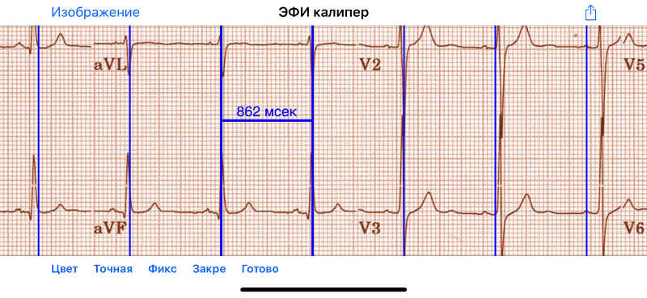

Содержание
- Вы снова на вызове…
- Электронный калипер
- Быстрый старт
- Загрузка изображения
- Настойка изображения
- Образец ЭКГ
- Выход из режима изображения
- Типы калиперов
- Настройка калиперов
- Выполнение измерений
- Добавляйте и удаляйте калиперы
- Выбор калипера
- Больше возможностей калипера
- Калибровка
- Изменение калибровки
- Интервал / Частота
- Расчет средней частоты и интервала
- Расчет QTc
- Бругадометр
- Индивидуальные настройки
- Проблемы и ограничения
- Благодарности
Вы снова на вызове…
Сейчас 2 часа ночи и звонит телефон. Это мед. сестра из кардиологического отделения. Г-н Смит собирается принять назначенный антиаритмический препарат (кто придумывает эти сумасшедшие графики приема лекарств?), но его ЭКГ показывает пограничное удлинение интервала QTc, по крайней мере по данным компьютера. Она не уверенна, безопасно ли давать препарат. Мед. сестра хочет отправить вам ЭКГ.
Вы открываете ЭКГ на своем телефоне. Вы смотрите на QT интервал. Вы не уверенны в измерениях компьютера. Вам надо его перепроверить. Вы начинаете считать маленькие клеточки. Вы достаете старый механический штангенциркуль, подаренный много лет назад одним фарм. представителем, когда такая щедрость еще была легальной. И вы думаете про себя: я живу в эпоху цифровых технологий. Неужели я делаю измерения на своем iPhone механическим штангенциркулем?
Электронный калипер
ЭФИ калипер обеспечивает электронный калипер для измерения интервалов, он накладывается на изображение ЭКГ или запись электрофизиологического исследования. В систему для электрофизиологического исследования электронные калиперы включенны по умолчанию. ЭФИ калипер предполагает аналогичный калипер для использования на Вашем iPhone или IPad. Электронные калиперы ЭФИ калипер точнее в измерении, проще в использовании и менее опасны, чем механический штангенциркуль (они не имеют острых краев!)
Быстрый старт
Во время начала работы ЭФИ калипер, загружается образец ЭКГ и калипер времени. Передвинуть калипер можно прикоснувшись к планке калипера и перетащив его пальцем. Увеличить или уменьшить калипер можно коснувшись пальцами одной из вертикальных панелей и перетащив её. Сжимайти и увеличивайте масштаб ЭКГ при необходимости увеличить или уменьшить изображение. Если изображение ЭКГ больше, чем ваш экран, то вы можете перетащить изображение пальцем и выбрать место для измерения. В остальных инструкциях речь пойдет о том как загрузить ЭКГ, добавить или удалить калиперы, откалибровать калиперы и сделать такие расчеты, как корригированный интервал QT.
Загрузка изображения

Рис. 1.: кнопка Изображение
Используйте кнопку Изображение в левом верхнем углу экрана для того, чтобы открыть меню Изображение в нижней части экрана.

Рис. 2.: меню Изображение
С помощью этого меню вы можете загрузить и настроить изображение ЭКГ. Есть несколько способов загрузить ЭКГ изображение.
Сделать фото ЭКГ
 Нажмите Камера для того чтобы снять ЭКГ и загрузите его в приложение. Обратите внимание, что изображения снятые таким образом не сохраняются в альбоме фотогрфий устройства. Этот способ лучше использовать если вам необходимо быстро выполнить измерения и нет необходимости сохранять изображение.
Нажмите Камера для того чтобы снять ЭКГ и загрузите его в приложение. Обратите внимание, что изображения снятые таким образом не сохраняются в альбоме фотогрфий устройства. Этот способ лучше использовать если вам необходимо быстро выполнить измерения и нет необходимости сохранять изображение.
Выберите фото из фотопленки.
Нажмите Выбрать для того, чтобы выбрать изображение которое уже сохранено в фотопленке вашего устройства (например, прикрепленный к письму файл с изображением, который вы сохранили или фото, которое вы сняли раннее)
Используйте Поделиться чтобы выбрать фото или PDF из других приложений
ЭФИ калипер может открывать изображения и PDF файлы независимо от того где они храняться на вашем устройстве. Вы напрямую можете открывать пикрепленные файлы почты, файлы из iCloud, Google Drive и Dropbox. Также легко открыть изображение ЭКГ напрямую из приложения AliveCor Kardia™. Все что для этого надо, это нажать кнопку Поделиться. Это выглядит следующим образом: 
В зависимости от приложения эта кнопка может быть в в верхней части экрана, или может потребоваться длительное нажатие на изображение для того, чтобы открыть меню Поделиться. Здесь вы можете увидеть кнопку Поделиться в правом верхнем углу экрана / Кардия /:

Рис. 3.: Кнопка Поделитья в верхнем правом углу
Когда открыто меню Поделиться, один из вариантов должен быть *Копировать в ЭФИ калипер *. При выборе этого параметра откроется изображение в приложении.

Рис. 4.: Копировать в ЭФИ калипер откроет изображение в ЭФИ калипер
Если опция Копировать в ЭФИ калипер не открывается, тогда попробуйте открыть Краткий обзор:

Рис. 5.: Кнопка Краткий озор находится в правом нижнем углу
или кнопку Открыть в…. Выбирая ее должно открыться окно, где появится Копировать в ЭФИ калипер.

Рис. 6.: Кнопка Открыть в… позволяет открыть изображение в ЭФИ калипер.
Открытие прикрепленных файлов из почты или файлов из Dropbox.
Для открытия прикрепленных файлов из почты или файлов из Dropbox, загрузите вложения или файлы (детали зависят от приложения email, которое вы используете). Затем при просмотре вложения или файла коснитесь изображения или долго жмите, чтобы появилась кнопка Поделиться. Выберите Поделиться, а затем выберите Копировать в ЭФИ калипер, чтобы открыть изображение или файл PDF в приложении.
AliveCor
Для того чтобы просмотреть изображение ЭКГ из приложения AliveCor Kardia, выберите Журнал, затем Поделиться для конкретной сохраненной ЭКГ, которую вы хотите просмотреть.

Рис. 7.: Кнопка Kaрдия Поделиться имеет значок конверта
После выбора кнопки Поделиться, выберите PDF из опций, которые открываются. Затем выберите Поделиться в правом верхнем углу экрана. Выберите Копировать в ЭФИ калипер и можно приступать к измерениям!
Многостраничный файл PDFs
Если файл PDF содержит несколько страниц, то приложение сначала отобразит первую страницу. Вы можете перейти к другим страницам выбрав Предыдущая или Слудующая в меню Изображение.Обратите внимание, что если вы переключитесь на другое приложение и ЭФИ калипер прекратит работу с iOS (как это происходить автоматически для экономии объёма памяти), доступен будет только просмотр последней страницы, когда приложение будет перезапущено. Чтобы отобразить другие страницы, необходимо перезагрузить файл PDF.
Настойка изображения
Вы можете отрегулировать положение изображения с помощью сведения и разведения пальцев и прокрутки файла пальцем. Обратите внимание, что в режиме изображения калиперы зафиксированы на месте. Используйте меню Выровнить, чтобы повернуть или перевернуть изображение. Это удобно, если изображение повернуто или не совсем ровно по отношению к экрану. Вы можете поворачивать изображение на 90° в любом направлении или с шагом 1°. Если вы выберете меню Ещё, вы можете более точно настроить изображение, повернуть на 0.1 ° или переверните изображение, если по какой-то причине оно было перевёрнуто (переворачивание изображения ЭКГ может стать интересным времяпрепровождением само по себе). Вернитесь из меню Ещё в меню Выровнить, выберите Готово. Используя настройки, вы можете выровнить изображение так, чтобы оно было квадратным для калиперов. После поворота изображения откалибруйте калипер. Если вам нужно вернуться в исходное положение и изменить масштаб, используйте Сброс. После настройки изображения выберите Готово, чтобы вернуться в главное меню Изображение.

Рис. 8.: меню Выровнить

Рис. 9.: меню Ещё
Образец ЭКГ
Нажмите Образец чтобы открыть ЭКГ, которое прилагается к ЭФИ калипер. Это хорошая практика в использовании приложения или демонстрации его другим.
Выход из режима изображения
После того как вы загрузили и настроили изображение, вам следует выйти из режима изображения, после чего вы можете использовать калиперы. Выберите Измерить в левом верхнем углу экрана, чтобы вернуться к главному экрану ЭФИ калипер.

Рис. 10.: Используйте кнопку Измерить для выхода из режима Изображение.
Типы калиперов
Калиперы могут быть горизонтальными для измерения времени, вертикальными для измерения амплитуды и в форме угла для измерения угла в градусах. Калиперы времени выглядять как буква Н, калиперы амплитуды выглядят как буква Н, которая лежит на одной стороне и калипер угла напоминает по форме перевернутую букву V.
Настройка калиперов
Калипер времени и амплитуды
Перетащите планку калипера, чтобы переместить его как единое целое. Передвиньте левую или правую планку (или сверху или снизу если это калиперы амплитуды), чтобы растянуть или сжать калиперы. Обратите внимание, что вы не можете одновременно зажимать обе полосы.

Рис. 11.: Один невыбранный некалиброванный калипер времени
Калипер угла
Калиперы угла перемещаются как единое целое, перемещаясь в вершине или чуть выше вершины угла. Вершина - это место, где две линии соединяются. Перетаскивая любой край калипера на небольшое расстояние от вершины, вы увеличите или уменьшите угол.

Рис. 12.: Калипер угла
Микропередвижения
Возможно передвигать Калипер на очень короткие интервалы используя для этого клавиши со стрелками. Смотри Точная настройка положения калипера.
Выполнение измерений
Интервал, измеренный калиперами времени или амплитуды, отображается сверху или рядом с планкой калипера. До тех пор, пока эти калиперы калибруются, измерения отображаются в произвольных единицах (точках, примерно эквивалент экранных пикселей). Угловые калиперы показывают измерение текущего угла в градусах и не требуется калибрования чтобы отобразить угол.
Добавляйте и удаляйте калиперы
выбрав + из главного меню, чтобы добавить новый калипер.

Рис. 13.: Главое меню
Выберите Время, Амплитуда или Угол чтобы добавить калипер, который вы хотите.
Дважды нажмите на калипер, чтобы удалить его.

Рис. 14.: Добавить калипер в меню
Выбор калипера
Когда используются несклько калиперов, необходимо, чтобы один из них был активным когда вы калибруете или производите вычисления. По умолчанию неактивный калипер синего цыета, а активный - красного. Вы можете изменить эти цвета, используя приложение Индивидуальные настройки. Также возможно с помощью change individual caliper colors. Вы можете активировать калипер одним нажатием. Коснитесь его еще раз (но не слишком быстро, так как двойное нажатие удалит калипер), чтобы деактивировать его. Поскольку одновременно может быть только один активный калипер, выбор другого калипера снимет выбор с предыдущего калипера. В некоторых случаях калипер будет выбран автоматически (например, для калибровки), если вы еще не выбрали его. Если вы хотите выбрать другой калипер, просто нажмите на него.

Рис. 15.: Два неоткалиброванных калипера, время и амплитуда. Выбран калипер времени.
Больше возможностей калипера
Ещё меню

Рис. 16.: Ещё в меню калипера
При выборе кнопки Ещё в главном меню отображается меню выше. Параметры этого меню описаны ниже.
Изменение цвета калипера
Начальные цвета калипера установлены через приложение Индивидуальные настройки и эти цвета применяются ко всем новым калиперам. Однако, после добавления калипера, его цвет можно изменить, и каждый калипер может иметь другой цвет. Эти изменения цвета сохраняются до тех пор, пока калиперы не будут удалены или приложение не будет остановлено. В меню Ещё выберите кнопку Цвет. Затем нажмите и удерживайте калипер, чтобы открыть палитру цветов. Выберите цвет, и калипер изменится на этот цвет.

Рис. 17.: Палитра цветов калипера
Точная настройка положения калипера
Иногда возникает необходимость точно настроить положение калипера, или слишком сложно позиционировать калипер, корректирую положение пальцем. Пришло время для Подстройки! Нажмите кнопку Точная настройка. Затем нажмите на калипер (поперечная планка, боковая планка или, в случае углового суппорта, вершина угла) и появится меню с кнопками перемещения. Кнопки со стрелками влево и вправо или вверх и вниз перемещают выбранный компонент калипера или весь калипер с помощью микроперемещений. Вы можете перемещать либо боковую планку (или угол углового калипера), либо калипер в целом по градациям одной точки (≈ пиксель) или десятой части, в зависимости от того, какой тип стрелки вы нажимаете (⇨ или →). Нажмите кнопку Готово, чтобы вернуться в главное меню.

Рис. 18.: Кнопки для подстройки положения калипера
Фиксированный калипер
Выберите Фикс, чтобы преобразовать калипер времени в фиксированный калипер. Появятся вертикальные линии с каждой стороны калипера, равные его ширине. Это очень удобно для анализа регулярности ритма и детекции волны Р, проявляющейся на фоне тахикардии или во время блокады сердца. Выберите "Фикс", чтобы снова вернутся к обычному калиперу.

Рис. 19.: Фиксированный калипер
Заблокировать изображение на месте
При перемещении и регулировке калиперов вы можете иногда непреднамеренно переместить основное изображение. Выберите Заблокировать, чтобы блокировать изображение. В верхней части экрана появляется сообщение, указывающее, что изображение заблокировано. Разблокируйте изображение, выбрав Разблокировать.
Калибровка
Выберите Кал или Калибровка. Протяните выбранный калипер на известный интервал (например, 1000 мс для времени или 10 мм для амплитуды). Выберите Установить. В диалоговом окне убедитесь, что интервал соответствует тому, что вы измеряете. Введите как интервал калибровки, так и единицы измерения (например, 500 мс или 1 сек или 1 мВ). Выберите * Установить * в диалоговом окне чтобы установить калибровку. Обратите внимание, что время и амплитуду необходимо калибровать отдельно. После калибровки калиперы будут показывать интервалы в единицах, используемых для калибровки. Вновь созданные калиперы будут использовуть ту же калибровку.

Рис. 20.: До калибровки

Рис. 21.: После калибровки
Калиперы угла не требуют калибровки. Однако, после калибровки времени и амплитуды, калиперы угла могут быть использованы как No description for this link.
Изменение калибровки
Вы можете выполнить перекалибровку в любое время. Вы можете очистить всю калибровку, выбрав Очистить на панели калибровки. Обратите внимание, что калибровка поддерживается, если устройство повернуто или изображение увеличено. Выбор нового изображения приведет к сбросу калибровки.
Интервал / Частота
После калибровки (горизонтального) калипера времени, если вы используете единицы измерения времени (например, мсек или сек) для калибровки, можно переключаться между интервальными измерениями (например, 600 мс) и измерениями сердечного ритма (например, 100 уд/мин), выбирая Интервал/Частота на iPads (или И/Ч на iPhone).
Расчет средней частоты и интервала
Выберите откалиброванный калипер и растяните его на несколько интервалов по времени. Выберите Средняя частота или срЧаст и введите количество измеряемых интервалов. В диалоговом окне будет отображаться средняя частота и интервалы сердечных сокращений. Это полезно для расчета частоты и интервалов при нерегулярном ритме, например фибрилляции предсердий.
Расчет QTc
Выберите QTc. Растяните выбранный калипер на один или несколько RR интервалов и выберите Измерить. Введите количество интервалов, которое включает калипер и выберите Продолжить. Затем используйте тот же калипер для измерения интервала QT. Выберите Измерить. В диалоговом окне появится значение QTc, по умолчанию рассчитанное по формуле Базетта. Выберите Повторить QT, чтобы выполнить другое измерение QT с использованием того же интервала RR. Выберите Готово, чтобы закончить измерение QTc. Вы можете изменить формулу QTc, используя настройки приложения.

Рис. 22.: первый этап измерения QTc: измерение 1 или более RR интервалов

Рис. 23.: второй этап измерения QTc: измерение QT интервала

Рис. 24.: результат QTc
Точная настройка расчета QT
Обратите внимание, что во всех других измерениях возможно микроперемещения (т. е. "tweak") калипера с помощью кнопок со стрелками Точная настройка перед выполнением измерений. Однако во время второго этапа измерения QTc (измерение QT), опция Точная настройка недоступно из-за выполнения опции измерения QT. Для того, чтобы произвести микроперемещения при измерении QT, длительно удерживайте отдельные элементы калипера до появления стрелок микроперемещения, это позволит точнее настроить калипер при измерении. Однако, делать это необязательно. Некоторые пользователи стараются двигать калипер, не используя меню Точная настройка; так как на самом деле это может быть нудно. Вот почему длинные нажатия не используются широко во всем приложении. Но в некоторых ситуациях для измерения QT, возможно, потребуется эта функция. Это дополнительная опция. Установите его включением в меню *Разрешить точную настройку QTc *
Бругадометр
Бругадометр - это диагностический инструмент используемый при синдроме Бругады, разработанный в сотрудничестве с доктором Адрианом Баранчуком и его коллегами по Королевскому университету Кингстон (Онтарио, Канада). Он предназначен для диагностики на ЭКГ синдрома Бругады и неполной блокадой правой ножки п.Гиса. Этот инструмент находится в разработке в ЭФИ калипер и, вероятно, будет развиваться в следующих обновлениях. Чтобы использовать Бругадометр, необходимо откалибровать калипер амплитуды в миллиметрах (мм) и калипер времени (предпочтительно) в мс или мм. После этого калипер угла будет треугольным у вершины, как показано ниже.

Рис. 25.: Бругадометр представлен треугольником с основаниием 5 mm ниже вершины угла калипера
Основание треугольника будет располагаться на 5 мм ниже вершины треугольника. Правильное выравнивание этого треугольника с волной r' на ЭКГ у человека с подозрением на синдром Бругада измеряет так называемый бета угол и основание треугольника. Если у основание треугольника >160 мс (4 мм при стандартной ЭКГ со скоростью записи 25 мм/с) высокая вероятность картины ЭКГ признаков Бругада. Пожалуйста, посмотрите de Luna AB, Garcia-Niebla J, Baranchuk A. New electrocardiographic features in Brugada syndrome. Curr Cardiol Rev. 2014 Aug; 10(3): 175-180 для подробной информации.
Индивидуальные настройки
Такие настройки, как цвета калипера и калибровка интервалов по умолчанию,
можно выбрать в приложении «Настройки» вашего устройства в разделе *EP
Calipers . Вы также можете изменить настройки, выбрав
*Настройки из меню Действие, открывающегося нажатием
на значок  в правом верхнем углу экрана. После
изменения настроек возвращайтесь в приложение, выбрав значок обратно
в левом верхнем углу экрана настроек.
в правом верхнем углу экрана. После
изменения настроек возвращайтесь в приложение, выбрав значок обратно
в левом верхнем углу экрана настроек.
Проблемы и ограничения
- Изображения, сделанные с помощью кнопки Камера в приложении, не сохраняются в фотогалерею. Использование камеры в приложении рекомендуется для быстрого анализа ЭКГ, когда вы не планируете хранить изображение и использовать в дальнейшем.
- Вращение устройства не сопровождается вращением изображеня ЭКГ и калипера. Однако калибровка сохраняется при вращении.
- Настоятельно рекомендуется перекалибровать калиперы, если изображение (а не устройство) было повернуто. Хотя само приложение не требует этого.
- Если приложение помещается в фоновом режиме (например, при переключении на другое приложение), а затем завершается операционной системой (это iOS делает для сохранения памяти), / и /, если вы загрузили многостраничное изображение в формате PDF, в этой ситуации будет доступна страница, которую вы просматривали в последний раз. Когда это произойдет, появится диалоговое окно с предупреждением. Если вам необходимо перейти на другие страницы, тогда необходимо перезагрузить PDF-файл.
Благодарности
- Спасибо д-ру Майклу Кацу (Dr. Michael Katz) за концепцию.
- Спасибо Скотту Кранккалу (Scott Krankkala) за идею фиксированных калиперов.
- Спасибо Виктории Шатахцян за перевод на русский язык.
- Благодарности доктору Адриану Баранчуку (Dr. Adrian Baranchuk) и его коллегам из Королевского Университета
Кингстона (Queen's University Kingston) Онтарио, Канада, за Бругадометр и за помощь в реализации этого алгоритма.
- Исходный код для ЭФИ калипер доступен на GitHub.
- ЭФИ калипер - это программное обеспечение с открытым исходным кодом и лицензируется в соответствии с Apache License Version 2.0. Никаких гарантий относительно точности приложения нет, поэтому используете на свой страх и риск.
- По вопросам, сообщениям об ошибках или предложениям обращайтесь mannd@epstudiossoftware.com
- Веб-сайт: https://www.epstudiossoftware.com